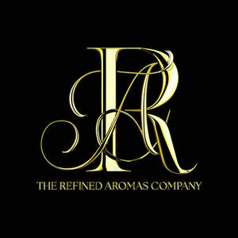

Trade Mark Journal No.2025/020 16 May 2025
UK00004197480 1 May 2025 (3,4)

- Class 3
- Scented wax melts; Wax melts [fragrancing preparations]; Room scenting sprays; Room perfume sprays; Scented room sprays; Room perfumes in spray form; Room fragrances; Room fragrancing products; Scented linen sprays; Fragrance refills for non-electric room fragrance dispensers; Shower and bath foam; Bath and shower foam; Shower foams; Bath and shower gels; Shower oils; Bath and shower oils [non-medicated]; Shower and bath gel; Bath and shower gel; Reed diffusers; Air fragrance reed diffusers; Body lotion; Body lotions; Body mask lotion; Moisture body lotion; Moisturizing body lotions; Body moisturisers; Moisturising body lotion [cosmetic]; Face and body lotions; Scented body lotions; Body creams; Body cream; Body soap; Body shampoos; Scented body lotions and creams; Scented body creams; Body cream soap; Skin lotion; Lotions for face and body care; Body scrub; Body butters; Body and facial butters; Body oils; Body creams [cosmetics]; Body fragrances; Face and body creams; Body scrubs; Body wash; Body and facial creams [cosmetics]; Creams (Non-medicated -) for the body; Body butter; Exfoliating scrubs for the body; Skin cleansing lotion; Facial lotion; Body oils [for cosmetic use]; Body washes; Exfoliating body scrub; Hair lotion; Hair and body wash; Lotions for the skin; Skin lotions; Cosmetic body scrubs; Body scrubs [cosmetic]; Body polish; Perfumed body lotions [toilet preparations]; Body cleansing foams; Bath lotion; Soaps for body care; Body milks; Hand and body butter; Body emulsions; Body oil [for cosmetic use]; Baby lotion; Body cream for cosmetic use; Beauty creams for body care; Baby body milks; Body care cosmetics; Moisturising skin lotions [cosmetic]; Facial lotions; Soap free washing emulsions for the body; Body soufflé; Non-medicated skin lotions; Beauty tonics for application to the body; Skin moisturizer; Milky lotions for skin care; Hand lotion (Non-medicated -); Cakes of soap for body washing; Hair lotions; Cleansing lotions; Skin moisturizers; Day lotion; Skin moisturiser; Skin moisturisers; Bathing lotions; Aromatherapy lotions; Aromatherapy creams; Potpourri sachets for incorporating in aromatherapy pillows; Massage oils and lotions; Scented oils; Ethereal oils for fragrancing; Aromatic oils for the bath; Essences for fragrancing; Oils for perfumes and scents; Aromatherapy pillows comprising potpourri in fabric containers; Bath oils; Non-medicated bath oils; Bath oils (Non-medicated -); Natural oils for perfumes; Cedarwood perfumery; Lavender oil for cosmetic use; Non-medicated shower oils; Bath herbs; Bath oils for cosmetic purposes; Ethereal essences and oils; Non-medicated oils; Rosemary oil for cosmetic use; Eucalyptus oil for cosmetic use; Perfumed oils for skin care; Distilled oils for beauty care; Scented soaps; Facial oils; Scented bathing salts; Scented sachets; Fragrance sachets; Scented oils used to produce aromas when heated; Perfume oils for the manufacture of cosmetic preparations; Essential oils; Aromatic potpourris; Perfumery and fragrances; Citronella oil for cosmetic use; Bath lotions (Non-medicated -); Fragrance sachets for eye pillows; Perfuming sachets.
- Class 4
- Candles; Votive candles; Scented candles; Candles for lighting; Fragranced candles; Perfumed candles; Candles (Perfumed -); Soy candles; Table candles; Aromatherapy fragrance candles; Special occasion candles; Candles containing insect repellent; Candle wax; Vegetable wax; Wax for making candles; Oils for fragrancing.
ALLEN-DONALDSON LTD